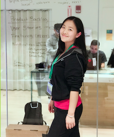

Software Engineer
Hi, I am Yifan Xing. A software engineer!Get in touch! Email | GitHub | LinkedIn | Twitter
Hi, I am Yifan Xing. A software engineer!
Get in touch! Email | GitHub | LinkedIn | Twitter
